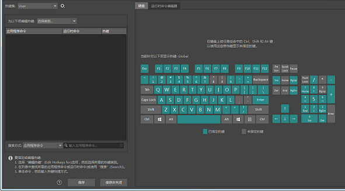

通过此编辑器，可以将预定义命令、脚本或标记菜单的热键或键盘快捷方式指定给键和键组合。
重要： 热键编辑器可用于覆盖 Maya 的默认热键，例如，Ctrl+C（表示复制）。这将更改将全局应用于 Maya 中的所有工具。
若要指定热键，请执行以下操作：
- 单击“热键集”(Hotkey Set)字段旁边的齿轮图标，然后选择“复制”(Duplicate)。
- 此时将显示“重复的热键集”(Duplicate Hotkey Set)窗口。为重复的“Maya 默认”(Maya Default)热键输入新名称，以便可以基于默认集编辑热键。（不能编辑 Maya 的默认热键集）。请确保已选定要编辑的热键集。
- 在“为以下项编辑热键”(Edit Hotkeys For)菜单中，为您的热键选择类别，如“菜单项”(Menu Items)、“编辑器”(Editors)、“其他项目”(Other Items)或“自定义脚本”(Custom Scripts)。
- 找到该命令，然后双击热键列表器的对应热键列。“热键”(Hotkey)字段将变为活动状态。
- 从“热键”(Hotkey)字段旁边的下拉菜单中，确保“按下时”(On Press)或“释放时”(On Release)处于活动状态，然后输入所需的组合。
注： 在指定键之前，选择“按下时”(On Press)/“释放时”(On Release)。
您还可以：
-
使用“搜索方式”(Search By)输入按“应用程序命令”(Application Command)、“运行时命令”(Runtime Command)或“热键名称”(Hotkey name)的搜索。
- 按用于您热键的字母数字键（或修饰键（Ctrl、Shift 或 Alt）与字母数字键的组合）。使用编辑器右侧的键盘图形，可以确定可用的热键和修饰键组合）。
如果键组合当前正在使用中，在对话框的左下角将显示一条消息，表明已指定给热键的命令，并询问您是否要覆盖当前设置。也可以选择“添加其他热键”(Add Additional Hotkey)以创建第二个热键。
- 单击“保存”(Save)或“保存并关闭”(Save and Close)。
-
热键集(Hotkey Set)
- 列出了可用的热键集。无法编辑 Maya 默认热键集，但是可以编辑其他集中的现有热键。您可以使用此列表旁边的控件来管理热键集，如下所示：
- 复制现有集，并重命名它以进行编辑
- 重命名集
- 导入集（.mhk 文件）
- 导出热键集以便其他 Maya 用户可以导入它
- 删除集
-
“为以下项编辑热键”(Edit Hotkeys For)
- 允许您选择热键类别。
- 热键列表器(Hotkey Lister)
- 热键将显示在此字段中。有以下三列：
| 应用程序命令(Application Command)
|
如用户界面中所示的命令名称。
|
| 运行时命令(Runtime Command)
|
如 Maya 所用的命令名称。
|
| 热键
|
当前指定的热键（如果有）。此字段是可编辑的。
|
- 搜索方式(Search By)
- 从下拉菜单中选择搜索选项，以将搜索设置为按“应用程序命令”(Application Command)、“运行时命令”(Runtime Command)或“热键名称”(Hotkey name)进行过滤。
- 搜索(Search)字段
- 开始键入以列出具有该名称的所有热键、应用程序命令和运行时命令。
键盘(Keyboard)选项卡
将光标悬停在屏幕键盘图形上查看已指定哪些键，或者按键盘上的任何修饰键（如 Shift 或 Ctrl）查看已指定哪些热键组合。
注： 无法将快捷方式指定给某些键，因为它们已被保留，例如，Ctrl-W 是保留的操作系统热键，无法指定。
注：
运行时命令编辑器
通过运行时命令编辑器，可以输入自定义 MEL 或 Python 脚本以创建运行时命令。
创建自定义运行时命令并为它指定热键，以便您可以用一键快捷方式执行它而不是在 MEL 命令行上输入它。（也可以为运行时命令创建工具架项目。）
运行时命令是由其他命令和/或脚本（例如 MEL 命令、Maya 命令、MEL 过程）组成的命令。可将运行时命令视为“一字包裹器”或别名，允许您使用短标签在 MEL 命令行上执行长的脚本（或脚本集）。可执行的许多（但不是所有）菜单项和图标都使用运行时命令来启动。
-
新建(New)
- 创建新的、用户定义的运行时命令，然后可以将其指定给某个热键。
-
编辑(Edit)
- 在热键列表器中的“自定义脚本”(Custom Scripts)下，编辑选定的用户定义的命令。
-
删除(Delete)
- 在热键列表器中的“自定义脚本”(Custom Scripts)下，删除选定的用户定义的命令。
-
名称(Name)
- 允许您将名称指定给自定义运行时命令。只要在热键列表器中选择运行时命令，此字段中就会显示对应的运行时命令的名称。
-
描述(Description)
- 输入自定义运行时命令的描述。只要在热键列表器中选择运行时命令，此字段中就会显示对应的运行时命令的描述。
-
语言(Language)
- 允许您指定要在其中搜索的命令语言。
-
类别(Category)
- 命令所属的类别。
-
子类别(Sub-Category)
- 允许您在“自定义脚本”(Custom Scripts)类别下指定子类型名称，以便进一步组织自定义运行时命令。
- 脚本字段
-
在其中输入激活命令时要运行的脚本的字段。